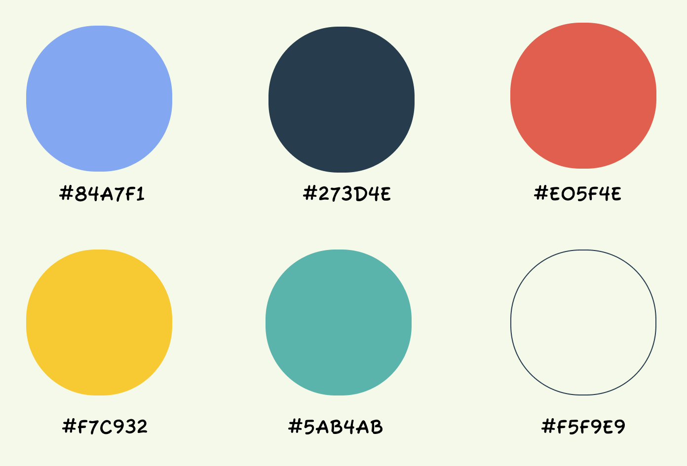
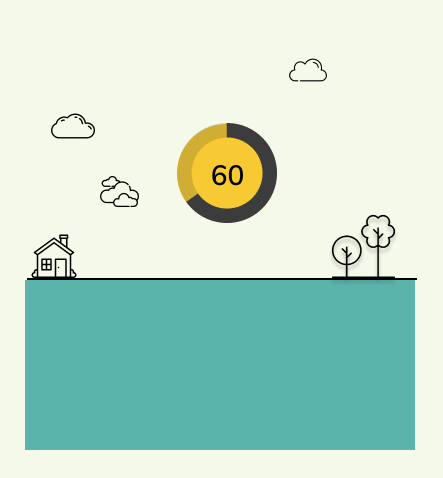
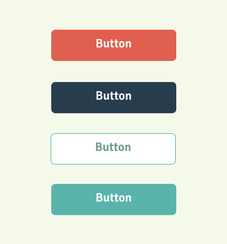
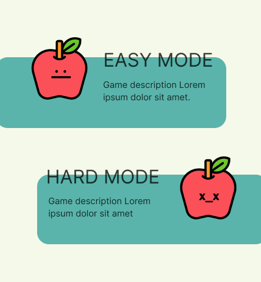

Colours
Colour Palette
These colours have been inspired from the real garbage bins colour palette. We have chosen high-saturated colours for the app to create a high contrast between UI elements. The advantage would be more noticeable and distinct elements which increase the user's interest and draw their attention.

Elements & Usage
Here are some of the main components of the app. Colours are playing a significant role in making them stand out and creating a better user experience.


